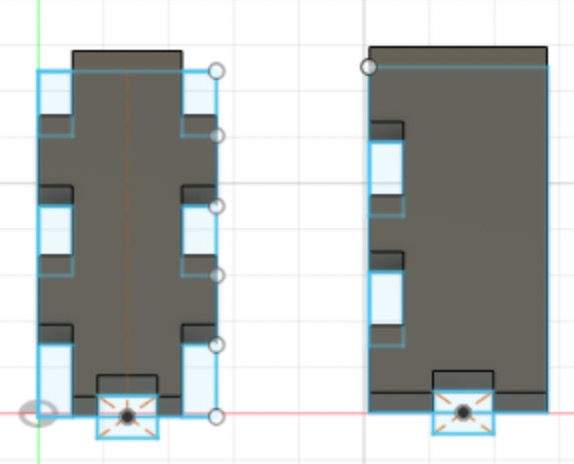
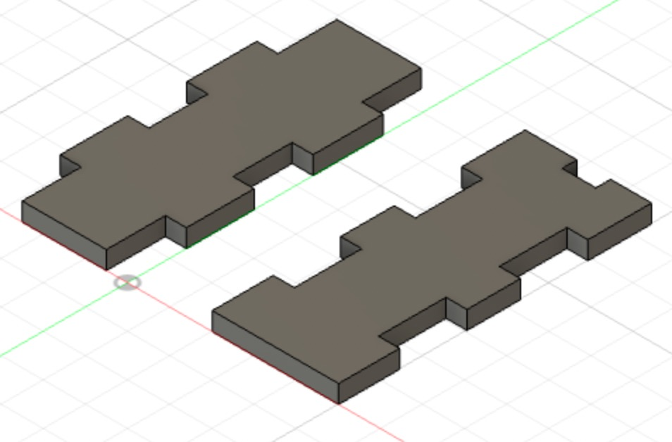
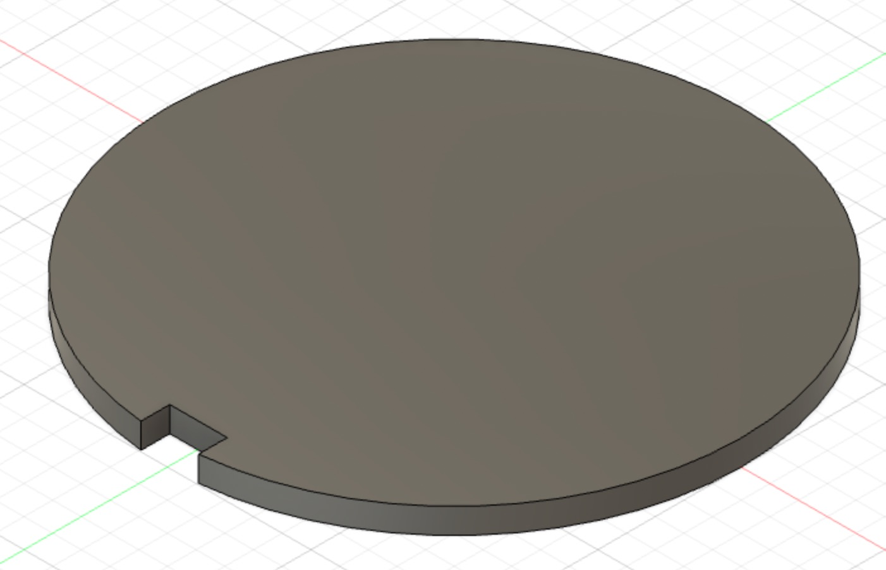
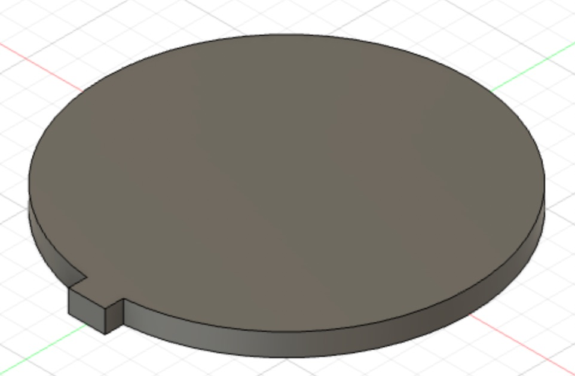
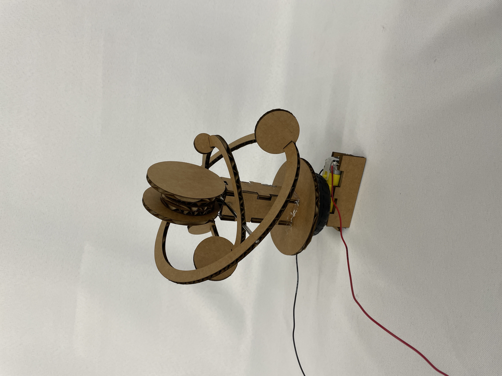

# Week 3: Electronics and Tools
<br><br>
Outline:
<br><br>
<a href="#A">Idea and Initial Sketches</a>
<br><br>
<a href="#B">Fusion 360- Making the 3D Models</a>
<br><br>
<a href="#D">Assembly</a>
<br><br>
<a href="#E">Soldering/Circutry</a>
<br><br>
<a href="#F">Final Result + Videos</a>
<br><br>
<a href="#G">Multimeter and Ohm's Law</a>
<br><br>
[home](../index.html)
<a id="A">
##Idea and Initial Sketches:
My idea was to create a model of our solar system that would be turned by a motor, creating rotation about the central circle, which would represent the sun.
Here are the sketches I made of the overall system and its individual components:
<a id="B">
##Fusion 360- Making the 3D Models:
I made each of these models through a combination of sketching, using constraints (mainly the ‘equal’ constraint), the mirror pattern, and parametarizing the sketches.
Here are sketches of each component, followed by their extruded versions.
I made them press-fit to ensure stability.
Note that there is only one orbit and only one planet, as I utilized the parameters to change them between cuts to avoid having to make multiple different versions of what is in effect the same object.


<img src="Orbit.jpeg" alt="orbit" style="width:377px;height:250px;">


<a id="D">
##Assembly:
I used hot glue to assemble the column for the sun and to attach the sun to the column, as well as to attach the column and the base for the motor. I connected the concentric circles of the orbits to each other by sliding a thin metal rod through the natural groves in the cardboard. Once I discovered the ideal size for the rod, I removed it from the orbits and cut it using the hacksaw. Then I replaced the orbits onto the rod and hot glued it into pre-prepared groves in the tops of the sun column.
Here are images from various stages of the process:
<img src="IMG_5714.jpeg" alt="Platform, wheel, and motor" style="width:186.22px;height:250px;">
<img src="IMG_5720.jpeg" alt="Sun, column, platform, wheel, motor" style="width:333px;height:250px;">
<img src="IMG_5719.jpeg" alt="Planets, orbits, metal rod" style="width:332px;height:250px;">

<a id="E">
##Soldering/Circutry:
I used the motor and wires that I soldered on the 28th in class to power my solar system. To finally power it, I used both the power source provided and the arduino.
<a id="F">
##Final Result + Videos:
Here is the final result, represented both by static images and two videos.
<video controls>
<source src="2e6b3c60-e1d9-46d1-9e57-957d13446fd8-0-3e13fe21-ff9d-4a2d-9c32-b34829af1de0.mp4" type="video/mp4">
</video>
<video controls>
<source src="4ff02486-e18f-49fd-b766-e0eea5fee697-0-306742b5-0817-4ce4-b8ca-0abe61e29845.mp4" type="video/mp4">
</video>
<a id="G">
##Multimeter and Ohm’s Law:
I used the multimeter to measure both voltage and resistance, as pictured below. Then I applied Ohm’s law to calculate the current in my circuit.
IMAGES OF THE MEASUREMENTS


And here is a [link](../index.html).